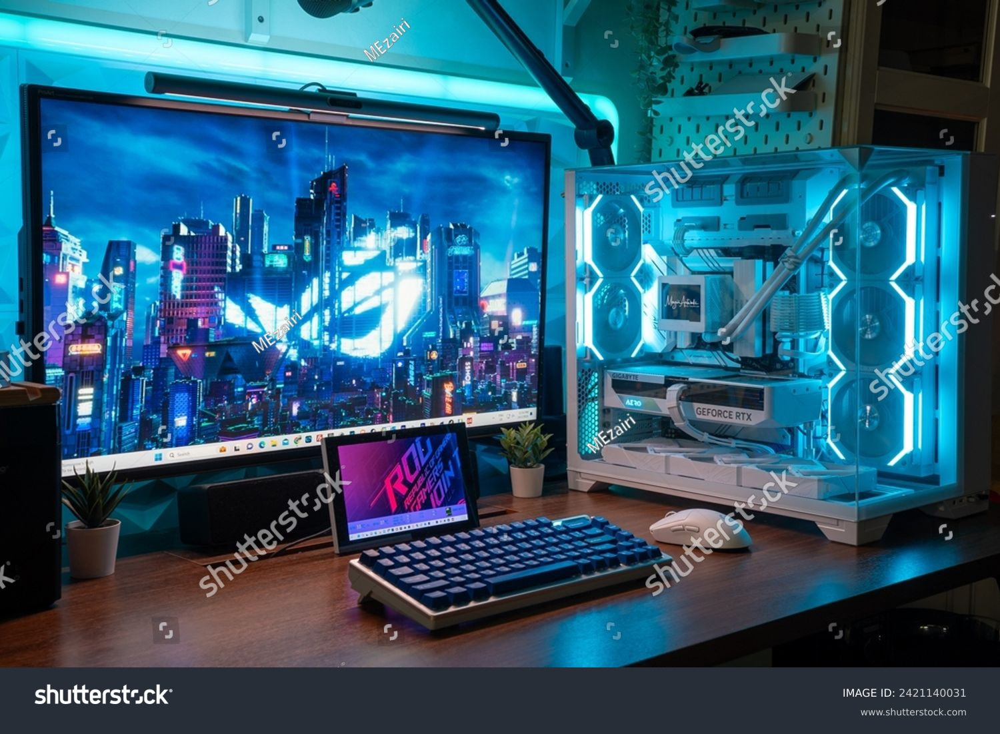
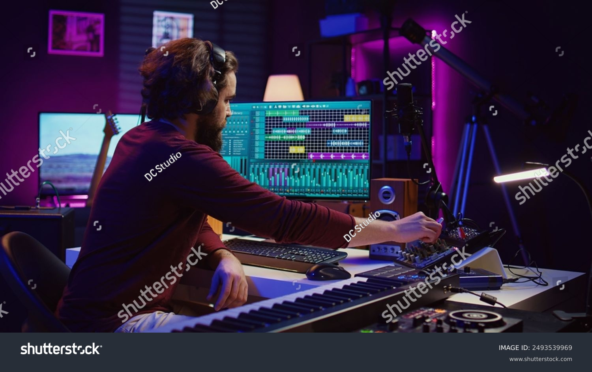

PC Básica
Ideal para trabajo de oficina, navegación y tareas cotidianas.
- Procesador Intel Core i3
- 8GB DDR4 RAM
- SSD 256GB
- Gráficos integrados
En TechParts ofrecemos una amplia gama de computadoras de escritorio, diseñadas para cubrir las necesidades de todo tipo de usuarios, desde tareas básicas hasta gaming y edición profesional.
Nuestras PCs están ensambladas con componentes de alta calidad para garantizar rendimiento, durabilidad y la mejor experiencia de usuario.
Ideal para trabajo de oficina, navegación y tareas cotidianas.
Para gamers que buscan potencia y velocidad en sus partidas.
Perfecta para diseñadores, editores y profesionales creativos.
No estás seguro cuál PC es la ideal para ti? Nuestro equipo experto te ayudará a elegir la mejor opción según tu presupuesto y necesidades.
Contacta con nosotros a través de nuestras redes sociales o usando el chat en línea.

